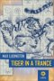

This must be heaven --
Tonight I crossed the line.
You must be the angel
I thought I'd never find.
Was it you I heard singin'
While I was chasin' dreams?
Driven by the wind,
Like the dust that blows around
And the rain fallin' down...
Well I never know,
Sure don't know,
Never know,
Never know,
Sure don't know.
This must be heaven --
This is where the rainbow ends.
At last it's the real thing...
At least I can pretend.
When that wind blows,
And the darkness starts to fall,
I can hear the sirens call.
It's a certain sort of sound
In the rain fallin' down,
Rain fallin down...
Rain fallin down...
Rain fallin down...
Rain fallin down...
[Bridge:] Holes in what's left of my reason,
Holes in the knees of my blues,
Odds against me been increasin'
But I'll pull through.
Never could read no road map
And I don't know what the weather might do,
But hear that witch wind whinin'
0 See that Dog Star's shinin',
I've got a feelin' there's no time to lose,
No time to lose!
Maybe goin' on a feelin' maybe goin' on a dream
Maybe goin' on a feelin'
0 Well I never know,
Sure don't know,
Never know,
Never know,
Sure don't know.
Well it's been heaven
But even rainbows end.
Now my sails are fillin'
And the wind's so willin'
That I'm good as gone again.
I'm still walkin', so I'm sure that I can dance
Just a saint of circumstance,
Like a tiger in a trance,
In the rain fallin down
Rain fallin down...
Rain fallin down...
Rain fallin down...
Rain fallin down...
Well I never know just don't know just don't know
Well, I sure don't know
What I'm goin' for
But I'm gonna go for it,
That's for sure.
Maybe goin' on a feelin'
Maybe goin' on a dream
Maybe goin' on a feelin'
Musical details:
Recorded on
First performance: August 31, 1979, at Glens Falls Civic Center, Glens Falls, N.Y. "Saint" appeared in the penultimate spot in the first set, following "Lost Sailor" and preceding "Deal".
The song title was used, at Steve Silberman's suggestion, as the title of Sheila Weller's 1997 book Saint of Circumstance: The Untold Story Behind the Alex Kelley Rape Case: Growing Up Rich and Out of Control.
In several mythologies the rainbow is a bridge connecting earth to a supernatural otherworld; for example, the Norse Bifrost, which connects heaven and earth and is guarded by Heimdall, is identified in the Prose Edda with the rainbow..." (p. 361)[and later in the same entry:]
...a more general and enduring belief in Europe is that the end of the rainbow marks valuable buried treasure, generally a crock of gold.
Other references to rainbows are found in "That's It For the Other One" (twice), "The Eleven", "Crazy Fingers", "What's Become of the Baby?", "The Music Never Stopped", and "Estimated Prophet".
In Greek mythology, sea nymphs whose sweet music lured hearers to their death at the Sirens' hands; they embody the concept of the fatal supernatural lover. (p. 1013.)Eventually, Orpheus (see "Reuben and Cerise") triumphed over them by playing more sweetly than they, and they were turned into a group of rocks in the Mediterranean.

The title of a 2003 novel by Max Ludington, about a Deadhead circa 1985.